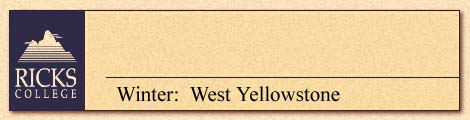
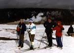

 |
Enjoy winter forests in scenic West Yellowstone (elevation
6,600 feet), a small alpine resort community nestled in the pines, on the
borders of Idaho, Montana and Wyoming, 90 miles northeast of Ricks College.
Lodging, meals and classrooms are in a comfortable motel (double occupancy,
limited singles, extra charge, private bath)--all just minutes from groomed,
established cross-country ski trails and near field study locations for
courses and wildlife viewing. Snowmobiles, snowmobile suits and skiing
equipment provided for applicable programs. No alcohol allowed. For PHYSICALLY
ACTIVE HOSTELERS.
Bus: Y Plane: Y Train: N Ferry: N |
| January 11-16, 1998 |
| January 4-9,1998 - $365 | Top Back |
| YELLOWSTONE PARK
IN THE WINTER: A GRAND SNOWMOBILE EXPERIENCE
Winter in Yellowstone National Park provides a unique snowmobile opportunity to observe and study geysers (such as Old Faithful), hot springs, calderas, fumaroles, mud pots, and Yellowstone’s Grand Canyon. Find out how seismic and volcanic forces formed the Yellowstone region. Learn about use of the park by Indians, early explorers, and mountain men. The struggle to become the world’s first national park will also be reviewed. Travel by snowmobile and snowcoach to observe winter wildlife (plant/ animals); explore this winter ecology through discussion of relationships and survival strategies of wildlife in the Greater Yellowstone ecosystem. |
|
| January 11-16,1998 - $365 | Top Back |
| CROSS-COUNTRY
SKIING IN YELLOWSTONE: BEGINNING TO ADVANCED
Discover Yellowstone Park while cross-country skiing! Learn about the equipment and proper use. Basic to advanced skills will be taught, including weight transfer, diagonal, turns, much more. Instruction is on groomed and established trails. THE PLUMBING OF A GEYSER:GEOLOGICAL PROCESSES
IN YELLOWSTONE PARK
WINTER WILDLIFE IN YELLOWSTONE: AN ECOLOGICAL
PERSPECTIVE
|
|